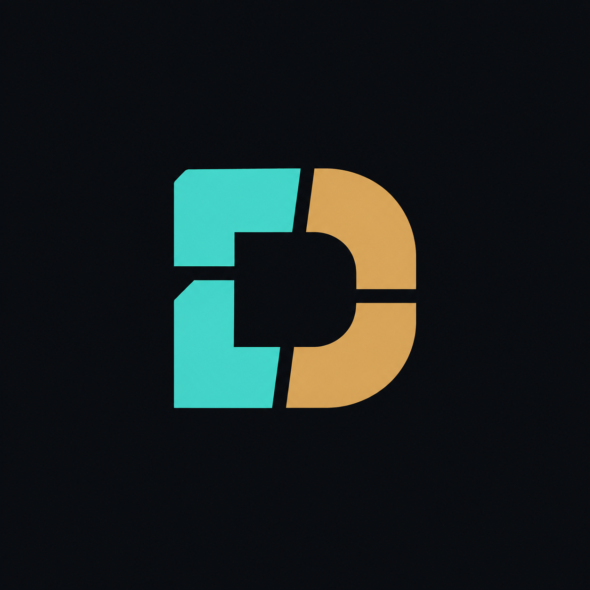
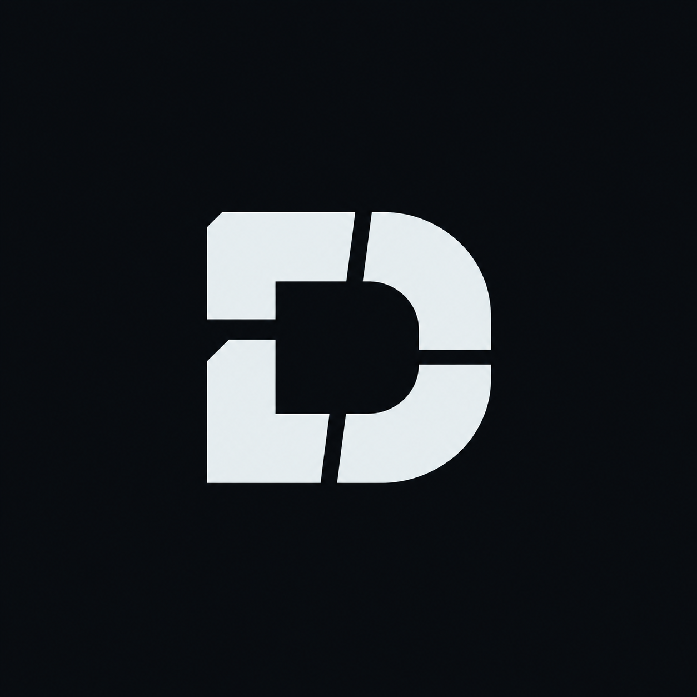
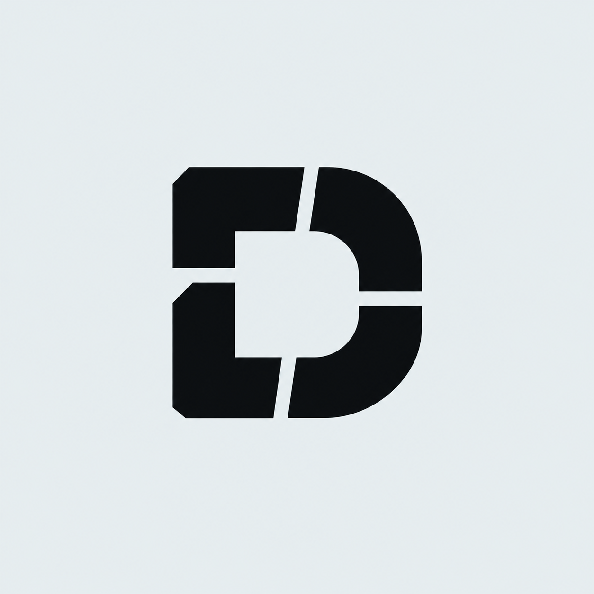
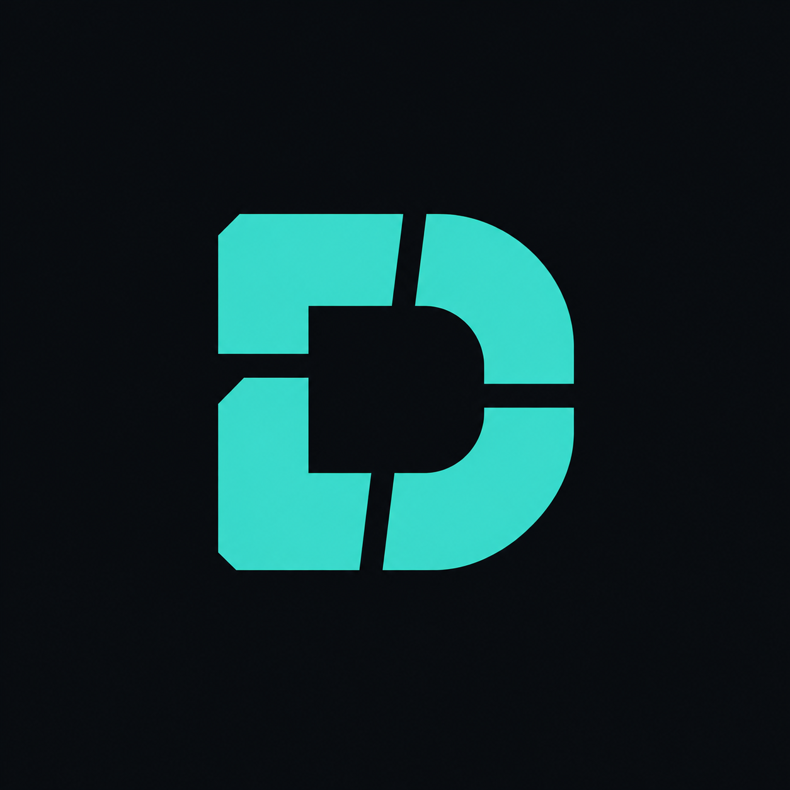
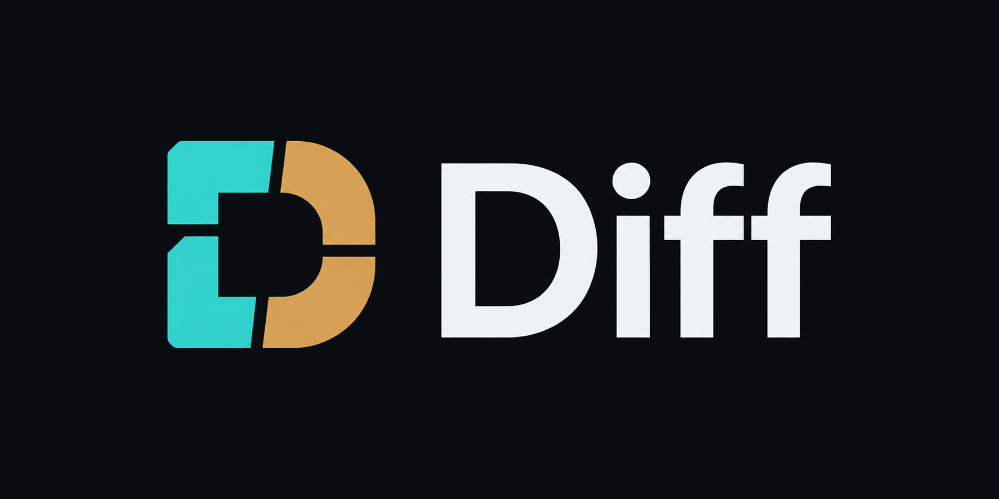
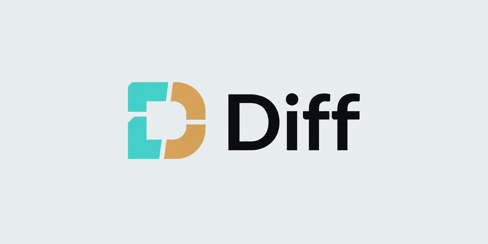

D bicolor
Turquesa + dorado · fondo oscuro
Símbolo de mayor contraste con el acento de la paleta.
Vista en píxeles · lienzo
32 px64 px128 px
Descargar PNGDIFF · IDENTIDAD VISUAL · PROPUESTAS V1
Comparación de símbolo, contraste y logotipo completo usando la paleta actual del sitio.
#3ED6C4
Dorado #D4A45C
Tinta #0A0E12
Pergamino #E7EEF0

Símbolo de mayor contraste con el acento de la paleta.

Tratamiento uniforme para una marca más sobria.

Versión de contraste para superficies claras.

Opción simplificada para revisar legibilidad a tamaños pequeños.

Composición horizontal para fondos oscuros.

Composición horizontal para fondos claros.